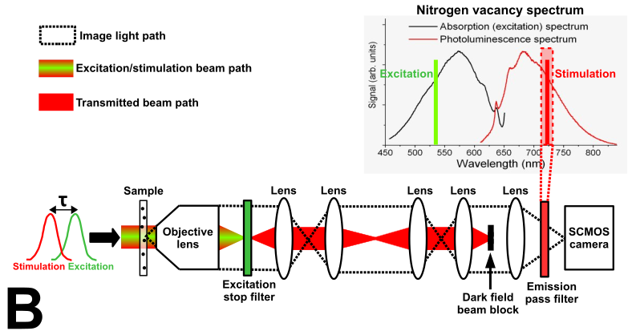
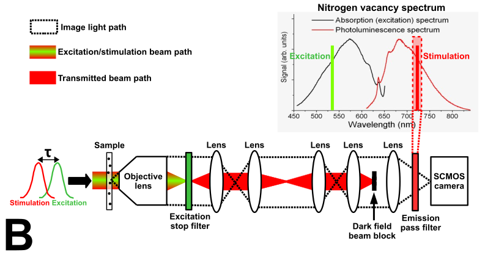

Stimulated Emission Imaging
This project is maintained by Sanjay R. Varma
Stimulated Emission Imaging
*Email: sanjay@calicolabs.com
†Email: andrew.g.york@gmail.com
We demonstrate experimental proof that stimulated emission is distinguishable from the stimulating beam. It has a point-like PSF (point spread function) and coherently interacts with the stimulating beam.
Introduction
Background of fluorescence microscopy and stimulated emission. Discuss "indistinguishable" and then show movie.
We built a microscope to test our above hypothesis. The results indicate that stimulated emission has a point-like PSF. We have coherently imaged stimulated emission from nitrogen vacancies in nanodiamonds, as well as from fluorescent dyed polystyrene beads, using dark-field microscopy and phase contrast microscopy.
Experimental design
Wide-field illumination of sample diameter []. Peak excitation intensity 4 MW/cm2. Peak stimulation beam intensity 1 MW/cm2. Ste filter narrow emission filter centered at 720 nm wavelength (FWHM 10 nm, Chroma).
 

| Imaging modality: | |
| Fluorescent sample type: |
{kind=link}
Fluorescence and stimulated emission depletion
To confirm that we are exciting fluorescence in our samples and generating stimulated emission, we observe fluorescence through a wide spectral filter that discriminates against excitation and stimulation beams. Figure 0 shows fluorescence measured from N-v centers in a nanodiamond for varying excitation power and with/without the stimulation beam. The exposure parameters are [insert here]. We see increasing fluorescence with increasing excitation power, and decreased fluorescence when the stimulating beam is introduced. We used a three-level atom model rate equation to fit the experimental data. From this model, we estimate a maximum excitation fraction of 0.6, which is well into the saturation regime. We also estimate [?]% depletion. [Similar plot for crimson dyed beads in supp mat?]

/figure_generation/figure_0.py.
Dark-field imaging of stimulated emission
We used dark-field imaging to attempt to image stimulated emission from N-v centers in nanodiamonds. The dark-field filter (a chrome disc in a back focal plane of our imaging system) is a high-pass filter in the fourier domain. This means that it preferentially passes light with high spatial frequency (small PSF and features in the image plane) while attenuating transmitted light. Most of the stimulating beam does not interact with the nanodiamonds and is attenuated. The image light is comprised of stimulated emission light from the N-v centers (if stimulated emission has a point-like PSF), as well as the elastically scattered light from the stimulating beam incident on the nanodiamonds. Both of these signals are the same color as the stimulating beam, so they both pass through the narrow (10 nm wide) emission filter centered at 720 nm wavelength. Because diamond has a relatively high refractive index of 2.4 and the nanodiamonds are large, the scattered light is very bright and can easily saturate the dynamic range of the camera in less than one millisecond.
When the stimulating beam alone illuminates the sample, we simply observe the scattered light image of the nanodiamond. When both the excitation beam and the stimulating beam are incident upon the sample, we observe a change in brightness of the scattered light image of the nanodiamond, possibly due to stimulated emission. We show this observation in Figure 3. The scattered light images are taken with 24 1-μs stimulation laser pulses at peak stimulation intensity over a 15 ms camera exposure. The displayed image is an average of 200 such exposures. Stimulated emission occurs when the excitation laser pulses (peak excitation intensity) are incident simultaneously with the stimulation pulses.

/figure_generation/figure_3_4.py. The result in Figure 3 seems counterintuitive. Why would stimulated emission, which we hope to image in addition to the scattered light, make the scattered light image darker? We rule out N-v fluorescence light, since negligible fluorescence (less than one count) transmits through the narrow emission filter onto the camera with only the excitation beam on over the course of one exposure.
We also rule out heating of the sample due to the excitation laser. In principle, sufficiently powerful excitation light could preferentially heat either the nanodiamond or the surrounding medium, causing a shape change that would subtly alter the amount of scattered light observed. Such a thermal effect on scattering should persist long (7 milliseconds?) after the microsecond duration excitation pulses [see supp mat for thermal effects]. In the control measurement where the stimulating pulse is delayed microseconds after the excitation pulse, the decrease in brightness of the scattered light disappears [supp mat or new figure?]. It is unlikely that the excitation pulse is thermally modulating the scattered light image.
But why would the [explanation for slight destructive interference]
We performed other control experiments to ascertain that the hallmark of dark-field imaging of stimulated emission from N-v centers in nanodiamonds is a decrease in scattered light image brightness. Stimulated emission in the linear regime (our fluorescence measurements indicate we do not saturate excitation or depletion) depends on both excitation and stimulation intensity. Figure 4 shows the change in brightness of the main scattered lobe for different excitation and stimulation intensities. For this power scan, the image acquisition and averaging parameters are the same as that for the data in Figure 3. As one would expect from stimulated emission, the signal magnitude increases with increasing excitation and stimulation intensity.

| Select data: |
/figure_generation/figure_3_4.py and /figure_generation/figure_3_4_sparse.py. [placeholder - constant energy pulse length scan]
If stimulated emission originates from the N-v centers distributed throughout the nanodiamonds, the PSF for both stimulated emission and scattered light should be identical. Since stimulated emission and scattering should coherently interfere, an axial scan of the brightness change of the dark-field scattered light should reveal differences, if any, between the PSF of the scattered light and the source of the brightness change. Figure 5 shows the change in brightness of the main scattered lobe at different axial positions, using maximum excitation and stimulation intensities. For this axial scan, the image acquisition and averaging parameters are the same as that for the data in Figures 3 and 4. Note that the change in brightness of the scattered light from the nanodiamond varies axially in a similar manner as the brightness of the scattered light image. This suggests that the PSF of the signal is similar to that of elastically scattered light.

| Z position: | (change this to adjust the axial position of the image) |

| Axial view: | (change this to adjust the axial view of the image) |
/figure_generation/figure_5.py. Phase contrast imaging of stimulated emission
Phase contrast imaging is a coherent imaging technique invented by Zernike [ref] that has better theoretical signal-to-noise ratio (SNR) than dark-field imaging. Because stimulated emission is coherent, phase contrast imaging is an ideal technique to boost SNR compared to dark-field imaging and simple fluorescence imaging. We adapted our dark-field imaging setup to perform phase contrast imaging. Our dark-field system contained a chrome disc used as a dark-field beam block in one of the back focal planes that we replaced with a chrome annulus that allowed a small fraction of transmitted light to evenly fill the field of view of the camera. We centered a phase mask (a laser-drilled hole in a (?mm thick) piece of glass) on another back focal plane of the imaging system. This mask gives a relative phase shift between image light, which passes through the glass, and transmitted light, which passes through the hole. For highest contrast imaging, we optimized two parameters: the relative phase (by carefully changing the angle of the phase mask), and the relative magnitude of the transmitted and image light (by choosing a chrome annulus with the correct inner and outer diameter). The experimental diagram is available in the online version of Figure 2, and also in the supplementary material.
Nanodiamonds doped with N-v centers are a poor candidate for phase contrast imaging of stimulated emission, because, as mentioned earlier, diamond has a very high refractive index and elastically scattered light from the diamonds is coherent and its magnitude dominates that of stimulated emission. One way to minimize scattering without decreasing stimulated emission is refractive index matching of the mounting medium to the fluorescent objects. Index matching media is not readily available for diamond particles, but for polystyrene beads (n ≈ 1.6), it is [meltmount reference]. Whereas our dark-field imaging system contained a chrome disc used as a dark-field beam block in one of the back focal planes, our phase contrast system replaced it with a chrome annulus that allowed a small fraction of transmitted light to evenly fill the camera field of view. We used the phase contrast imaging system to empirically determine the fractional mixture of different mounting media to minimize scattered light from polystyrene beads infused with crimson fluorescent dye (please see supp mat for procedure).

| Z position: | (change this to adjust the axial position of the image) |
/figure_generation/figure_6.py.
| Phase plate angle #: | (change this to adjust the relative phase of the transmitted light) |
/figure_generation/figure_7.py. Automatic reference list example
An example of how to include a citation [Eswaramoorthy2014]. If you inspect the HTML, you'll see that inserting the citation is super clumsy, but at least you don't have to keep track of uniqueness, ordering, etc.